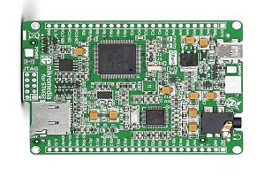
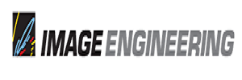
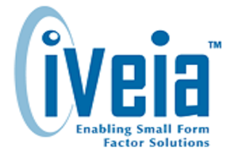

Toggle navigation
Home
Engineering Experience
Volunteer Experience
Engineering Experience
Home
Engineering Experience
Microsoft, Redmond, WA
Windows Authentication Development Engineering Intern
Implemented a new security feature that allowed protected Windows processes to communicate with an unprotected process without compromising security.
Developed new methods of authentication in collaboration with a multi-disciplinary team in order to ensure quality and customer satisfaction.
Shipped a new security feature in the latest release of Windows.
Maintained an aggressive timeline to meet the real-time needs of customers.
Key Technologies, Baltimore, MD
Computer Engineering Intern
Developed and tested firmware written in C for a handheld medical device measuring blood glucose levels.
Proposed the use of a bluetooth chip as method of communication between the device and its controller.
Collaborated with multiple disciplines on the design of a device to ensure the device met all the customer's standards.

University of Maryland, College Park, MD
System Engineering Project
Used the STM32-M4 Discovery Board to design a multi-meter in a combination of C and assembly.
Integrated knowledge of Bus structures, memory, I/O interfacing and data structures to complete project.
Created a reference manual that documented the different aspects of the project and the design considerations.

Image Engineering, Baltimore, MD
Computer Engineer
Improved speed of existing laser software controller by rewriting the firmware in ARM assembly.
Created a seamless transition between the old and new system in order to ensure minimal transitional downtime.
Incorporated a modular design scheme in the firmware to improve later firmware upgrades.

iVeia, Annapolis, MD
Consulting Engineering Intern
Built a python-based GUI that installed platform specific debian packages on customers’ computers.
Implemented new internal tools that integrated Bash and Python scripts that automated the generation of release notes and sped up product build time.
Analyzed filesystem performance with IO stress tests under real-world conditions.
University of Maryland, College Park, MD
System Engineer Project
Built a mini dashboard display console using an STM32 microprocessor to show car statistics like gas mileage, range, and error codes.
Used a OBD2 connected bluetooth device to ensure compatibility with all modern cars.
Designed a custom circuit board to allow communication between the LCD and microprocessor.